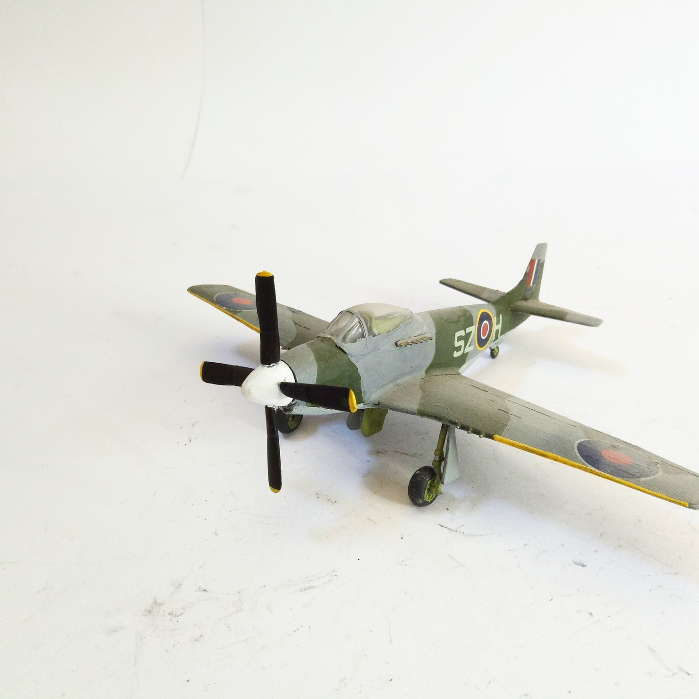
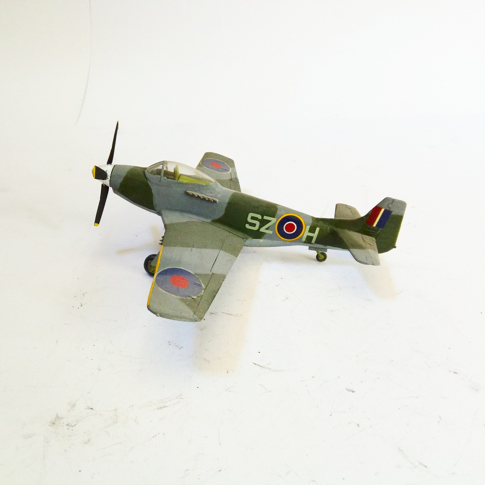

Aerei · scale model archive
North American P51 'Mid Engine'
North American P51 'Mid Engine' — Kit: Conversion from Revell kit, Scale: 1/72. Study of a mid eengined Mustang, nver realised, I wantd to see how it…

Photo gallery

English description
Study of a mid eengined Mustang, nver realised, I wantd to see how it looks
#1/72 #Conversion
Descrizione italiana
Study di una mid emotored Mustang, nver realised, I wantd una see how lo looks.